<Previous Exercise
| TOC
Exercise 6: Use a target file
In this exercise, we will make the project portable using a target definition file as target platform in Eclipse (instead of the "Running Platform").
Then we will re-use the target file for the target definition in the Tycho build.
Recovery option
This section is optional and only needed if you want to catch up from exercise 5 or reset your workspace.
Creating a target file to make the project portable
In the Eclipse workspace, the plug-ins currently compile against the running Eclipse installation.
This may lead to problems if other developers use a different version of Eclipse.
As first part of this exercise, we will make the project portable by defining the Eclipse target platform through a target file.
- Create a new general project tychodemo.target:
- CTRL+N > General > Project
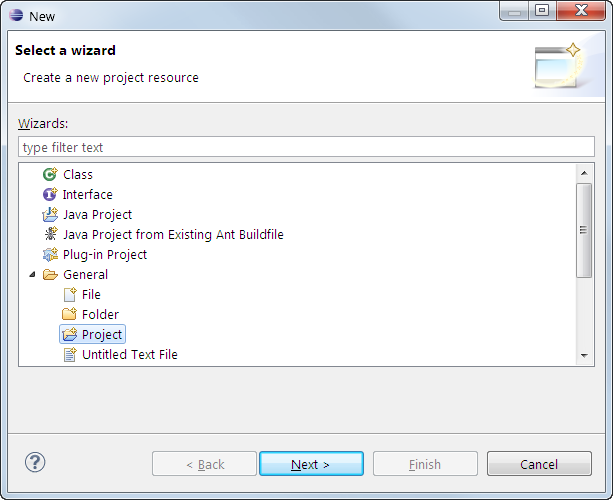
- Enter the project name tychodemo.target and hit Finish
(Note: Make sure the new project location folder is a sibling of the existing projects; deselect "Use default location" and enter the correct path if necessary.)

- In the tychodemo.target project, create a new, empty target definition called indigo.target:
- CTRL+N > Plug-in Development > Target Definition

- Enter the file name indigo.target and hit Finish
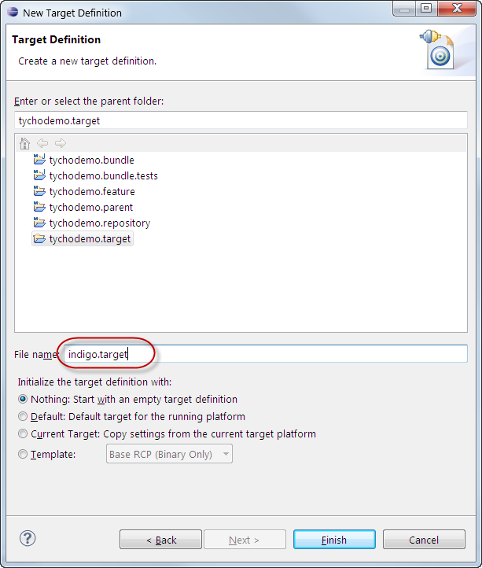
- In editor for the indigo.target, add the Eclipse SDK feature from the Indigo repository http://download.eclipse.org/releases/indigo/:
- Click Add...
- Select Software Site and click Next >
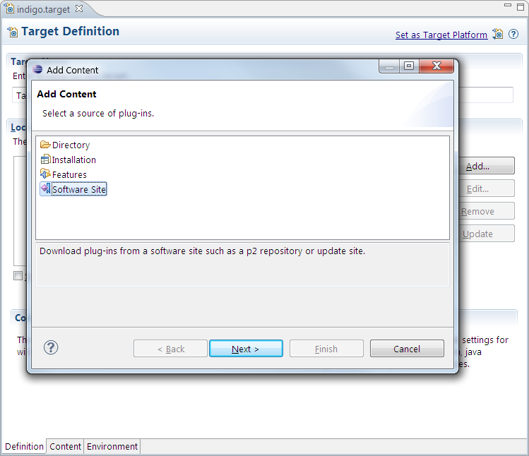
- In the Work with field, paste the URL http://download.eclipse.org/releases/indigo/ and press ENTER. Wait until the repository content is shown.

- Deselect Group by Category, enter Eclipse RCP in the filter text box and select the Eclipse RCP SDK feature. Deselect Include required software and hit Finish
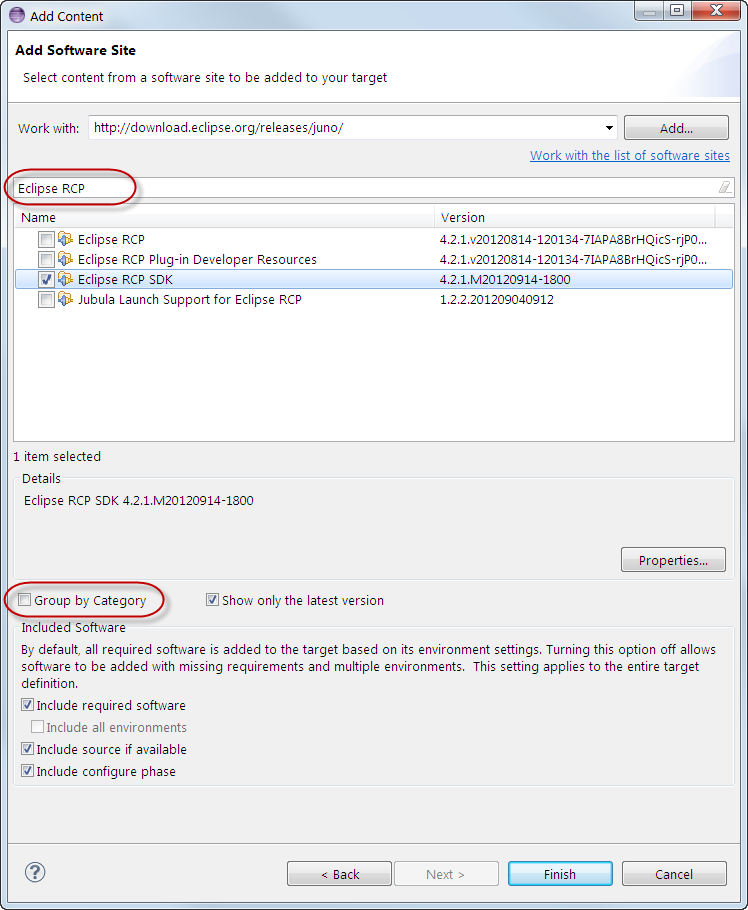
- Set the target definition as target platform:
- Wait until the target definition is resolved (optional). Click Set as Target Platform
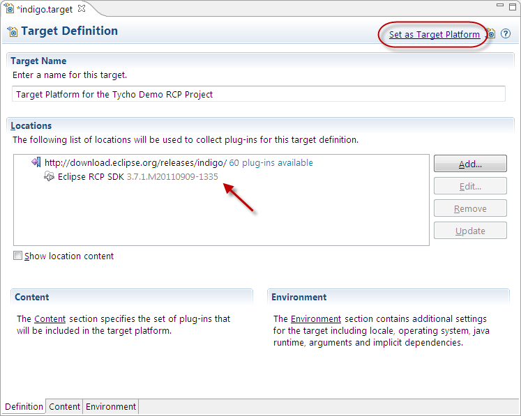
- This leads to a compilation problem: Bundle 'org.junit' cannot be resolved
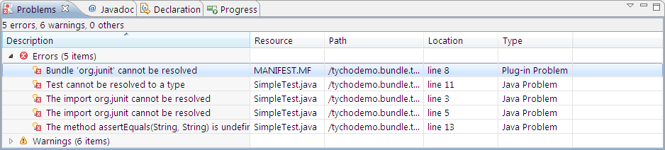
- We need to add the JUnit bundle to the target platform. Do this by adding the Eclipse Java Development Tools feature:
- In the editor of indigo.target, select the Indigo location and click Edit...
- If the dialog displays an error message, close the dialog and open it again by clicking Edit... (cf. bug 275999)
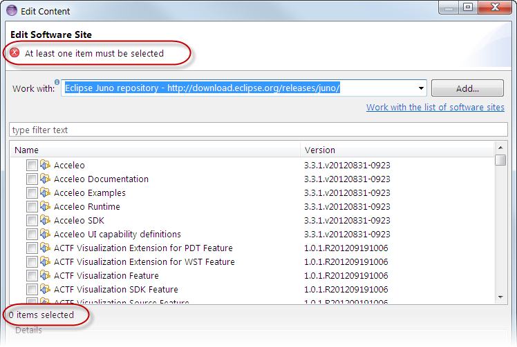
- Now the status text below the features should be 1 item selected
- Enter Java Development Tools in the search text box and select the one feature from the list. Do not click finish yet!
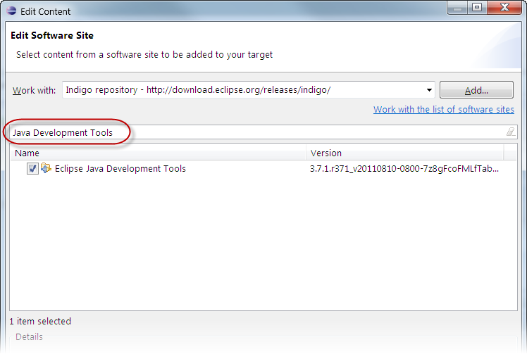
- Clear the filter text box – the status text below the features list should now say 2 items selected (cf. bug 309136). Hit Finish.
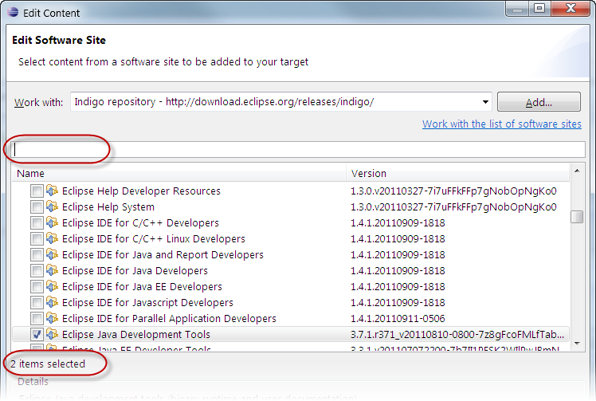
- Once the target definition is resolved, the editor shows two features under the Indigo URL
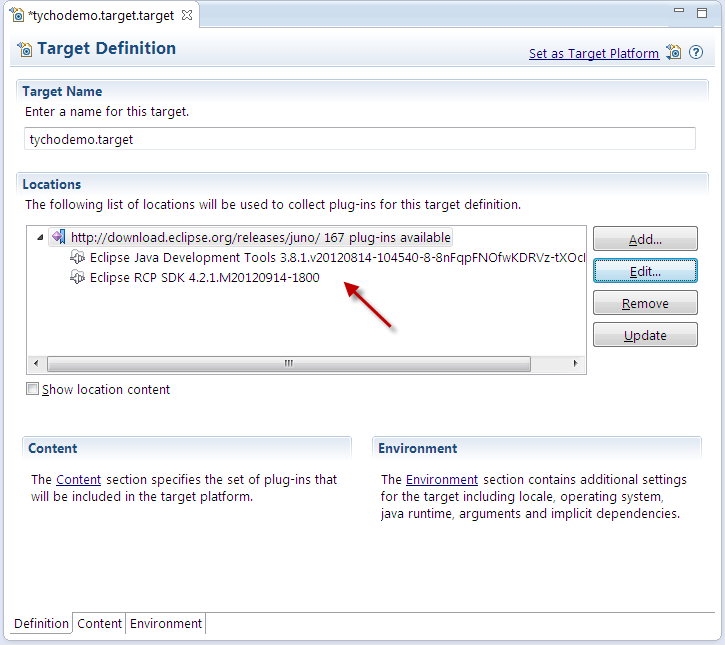
- Set the target definition as target platform. The compile error should now be resolved.
- Save the indigo.target file
Using the same target definition in the Tycho build
Now that we have a target definition file, we can use the that file for the target platform configuration in Tycho. In this way, we can have be sure to have the target platform in Eclipse and Tycho – and no longer have the problem of keeping the target platform configurations in sync.
- Add a pom.xml file in the tychodemo.target project root with the content below. (A separate project and this POM is needed to allow incremental builds, i.e. builds of parts of the reactor.)
<?xml version="1.0" encoding="UTF-8"?>
<project
xsi:schemaLocation="http://maven.apache.org/POM/4.0.0 http://maven.apache.org/xsd/maven-4.0.0.xsd"
xmlns="http://maven.apache.org/POM/4.0.0" xmlns:xsi="http://www.w3.org/2001/XMLSchema-instance">
<modelVersion>4.0.0</modelVersion>
<parent>
<groupId>tychodemo</groupId>
<artifactId>tychodemo.parent</artifactId>
<version>1.0.0-SNAPSHOT</version>
<relativePath>../tychodemo.parent/pom.xml</relativePath>
</parent>
<artifactId>tychodemo.target</artifactId>
<packaging>pom</packaging>
<build>
<plugins>
<plugin>
<groupId>org.codehaus.mojo</groupId>
<artifactId>build-helper-maven-plugin</artifactId>
<version>1.3</version>
<executions>
<!-- make target file available for incremental builds -->
<execution>
<id>attach-artifacts</id>
<phase>package</phase>
<goals>
<goal>attach-artifact</goal>
</goals>
<configuration>
<artifacts>
<artifact>
<!-- note: the file name must be ${classifier}.target -->
<file>indigo.target</file>
<type>target</type>
<classifier>indigo</classifier>
</artifact>
</artifacts>
</configuration>
</execution>
</executions>
</plugin>
</plugins>
</build>
</project>
- Add the tychodemo.target project in modules section of tychodemo.parent POM:
<module>../tychodemo.target</module>
- Configure the build to use the helios.target file as target platform:
- Run the Tycho build: Right-click tychodemo.parent > Run As > Maven install
The expected result is a build failure – the root cause can be seen at the start of the [ERROR] log output:
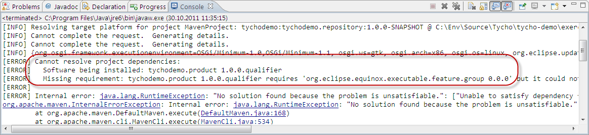
- The product build needs the org.eclipse.equinox.executable feature, which contains the native launchers. Add this feature in the target file:
- In the editor of indigo.target, select the Indigo URL and click Edit...
- If the dialog displays an error message, close the dialog and open it again by clicking Edit...
- Type launchers in the search text box and select the one feature from the list. (Here, you just need to know the name of the org.eclipse.equinox.executable feature...)
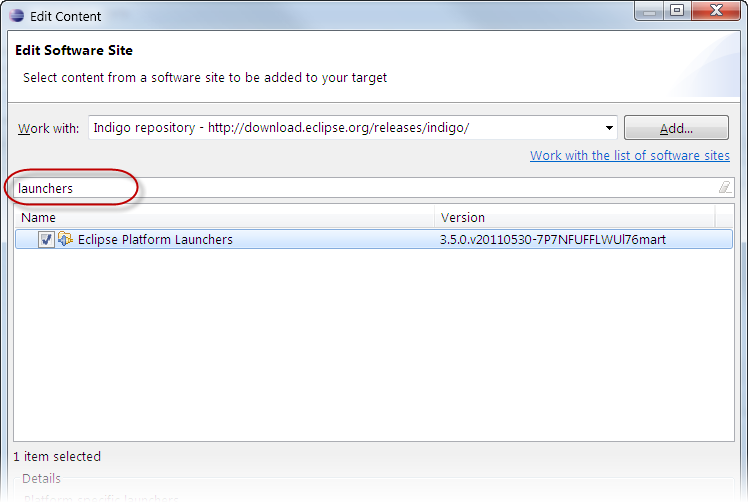
- Clear the filter text box – the status text below the features list should now say 3 items selected. Hit Finish.
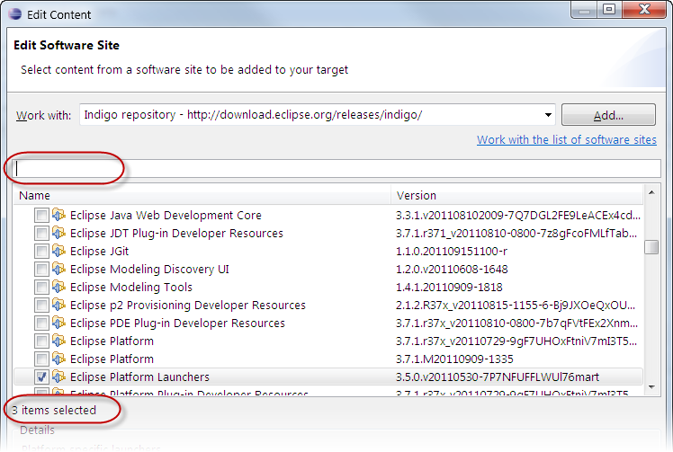
- Once the target definition is resolved, the editor shows three features under the Indigo URL
- Save the indigo.target file
- Run the Tycho build: Right-click tychodemo.parent > Run As > Maven install. The build should now be successful again.
This concludes this exercise. To recapitulate our achievements:
- We have created a target definition file in order to ensure that all developers of the project use the same target platform.
- We have re-used the target definition file in the Tycho build configuration to have the same target platform in Tycho as in Eclipse.
- We have now the possibility to manage the project's dependencies.
Congratulations: You have now completed the Tycho tutorial. You now may want to
<Previous Exercise
| TOC